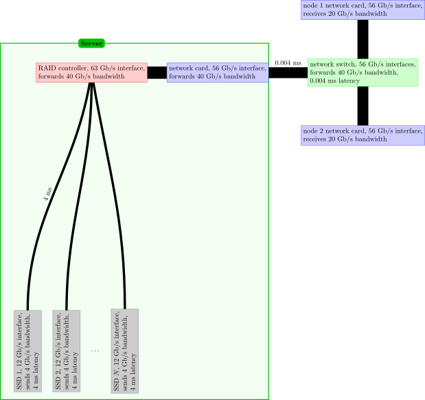

Using shared resources responsibly
Last updated on 2026-04-14 | Edit this page
Estimated time: 20 minutes
Overview
Questions
- How can I be a responsible user?
- How can I protect my data?
- How can I best get large amounts of data off an HPC system?
Objectives
- Describe how the actions of a single user can affect the experience of others on a shared system.
- Discuss the behaviour of a considerate shared system citizen.
- Explain the importance of backing up critical data.
- Describe the challenges with transferring large amounts of data off HPC systems.
- Convert many files to a single archive file using tar.
One of the major differences between using remote HPC resources and your own system (e.g. your laptop) is that remote resources are shared. How many users the resource is shared between at any one time varies from system to system, but it is unlikely you will ever be the only user logged into or using such a system.
The widespread usage of scheduling systems where users submit jobs on HPC resources is a natural outcome of the shared nature of these resources. There are other things you, as an upstanding member of the community, need to consider.
Be Kind to the Login Nodes
The login node is often busy managing all of the logged in users, creating and editing files and compiling software. If the machine runs out of memory or processing capacity, it will become very slow and unusable for everyone. While the machine is meant to be used, be sure to do so responsibly – in ways that will not adversely impact other users’ experience.
Login nodes are always the right place to launch jobs. Cluster policies vary, but they may also be used for proving out workflows, and in some cases, may host advanced cluster-specific debugging or development tools. The cluster may have modules that need to be loaded, possibly in a certain order, and paths or library versions that differ from your laptop, and doing an interactive test run on the head node is a quick and reliable way to discover and fix these issues.
You can always use the commands top and
ps ux to list the processes that are running on the login
node along with the amount of CPU and memory they are using. If this
check reveals that the login node is somewhat idle, you can safely use
it for your non-routine processing task. If something goes wrong -- the
process takes too long, or doesn’t respond – you can use the
kill command along with the PID to terminate the
process.
Login Node Etiquette
Which of these commands would be a routine task to run on the login node?
python physics_sim.pymakecreate_directories.shmolecular_dynamics_2tar -xzf R-3.3.0.tar.gz
Building software, creating directories, and unpacking software are
common and acceptable > tasks for the login node: options #2
(make), #3 (mkdir), and #5 (tar)
are probably OK. Note that script names do not always reflect their
contents: before launching #3, please
less create_directories.sh and make sure it’s not a Trojan
horse.
Running resource-intensive applications is frowned upon. Unless you
are sure it will not affect other users, do not run jobs like #1
(python) or #4 (custom MD code). If you’re unsure, ask your
friendly sysadmin for advice.
If you experience performance issues with a login node you should report it to the system staff (usually via the helpdesk) for them to investigate.
Test Before Scaling
Remember that you are generally charged for usage on shared systems. A simple mistake in a job script can end up costing a large amount of resource budget. Imagine a job script with a mistake that makes it sit doing nothing for 24 hours on 1000 cores or one where you have requested 2000 cores by mistake and only use 100 of them! This problem can be compounded when people write scripts that automate job submission (for example, when running the same calculation or analysis over lots of different parameters or files). When this happens it hurts both you (as you waste lots of charged resource) and other users (who are blocked from accessing the idle compute nodes). On very busy resources you may wait many days in a queue for your job to fail within 10 seconds of starting due to a trivial typo in the job script. This is extremely frustrating!
Most systems provide dedicated resources for testing that have short wait times to help you avoid this issue.
Test Job Submission Scripts That Use Large Amounts of Resources
Before submitting a large run of jobs, submit one as a test first to make sure everything works as expected.
Before submitting a very large or very long job submit a short truncated test to ensure that the job starts as expected.
Have a Backup Plan
Although many HPC systems keep backups, it does not always cover all the file systems available and may only be for disaster recovery purposes (i.e. for restoring the whole file system if lost rather than an individual file or directory you have deleted by mistake). Protecting critical data from corruption or deletion is primarily your responsibility: keep your own backup copies.
Version control systems (such as Git) often have free, cloud-based offerings (e.g., GitHub and GitLab) that are generally used for storing source code. Even if you are not writing your own programs, these can be very useful for storing job scripts, analysis scripts and small input files.
If you are building software, you may have a large amount of source code that you compile to build your executable. Since this data can generally be recovered by re-downloading the code, or re-running the checkout operation from the source code repository, this data is also less critical to protect.
For larger amounts of data, especially important results from your
runs, which may be irreplaceable, you should make sure you have a robust
system in place for taking copies of data off the HPC system wherever
possible to backed-up storage. Tools such as rsync can be
very useful for this.
Your access to the shared HPC system will generally be time-limited so you should ensure you have a plan for transferring your data off the system before your access finishes. The time required to transfer large amounts of data should not be underestimated and you should ensure you have planned for this early enough (ideally, before you even start using the system for your research).
In all these cases, the helpdesk of the system you are using should be able to provide useful guidance on your options for data transfer for the volumes of data you will be using.
Your Data Is Your Responsibility
Make sure you understand what the backup policy is on the file systems on the system you are using and what implications this has for your work if you lose your data on the system. Plan your backups of critical data and how you will transfer data off the system throughout the project.
Transferring Data
As mentioned above, many users run into the challenge of transferring large amounts of data off HPC systems at some point (this is more often in transferring data off than onto systems but the advice below applies in either case). Data transfer speed may be limited by many different factors so the best data transfer mechanism to use depends on the type of data being transferred and where the data is going.
The components between your data’s source and destination have varying levels of performance, and in particular, may have different capabilities with respect to bandwidth and latency.
Bandwidth is generally the raw amount of data per unit time a device is capable of transmitting or receiving. It’s a common and generally well-understood metric.
Latency is a bit more subtle. For data transfers, it may be thought of as the amount of time it takes to get data out of storage and into a transmittable form. Latency issues are the reason it’s advisable to execute data transfers by moving a small number of large files, rather than the converse.
Some of the key components and their associated issues are:
- Disk speed: File systems on HPC systems are often highly parallel, consisting of a very large number of high performance disk drives. This allows them to support a very high data bandwidth. Unless the remote system has a similar parallel file system you may find your transfer speed limited by disk performance at that end.
- Meta-data performance: Meta-data operations such as opening and closing files or listing the owner or size of a file are much less parallel than read/write operations. If your data consists of a very large number of small files you may find your transfer speed is limited by meta-data operations. Meta-data operations performed by other users of the system can also interact strongly with those you perform so reducing the number of such operations you use (by combining multiple files into a single file) may reduce variability in your transfer rates and increase transfer speeds.
- Network speed: Data transfer performance can be limited by network speed. More importantly it is limited by the slowest section of the network between source and destination. If you are transferring to your laptop/workstation, this is likely to be its connection (either via LAN or WiFi).
- Firewall speed: Most modern networks are protected by some form of firewall that filters out malicious traffic. This filtering has some overhead and can result in a reduction in data transfer performance. The needs of a general purpose network that hosts email/web-servers and desktop machines are quite different from a research network that needs to support high volume data transfers. If you are trying to transfer data to or from a host on a general purpose network you may find the firewall for that network will limit the transfer rate you can achieve.
As mentioned above, if you have related data that consists of a large
number of small files it is strongly recommended to pack the files into
a larger archive file for long term storage and transfer. A
single large file makes more efficient use of the file system and is
easier to move, copy and transfer because significantly fewer metadata
operations are required. Archive files can be created using tools like
tar and zip. We have already met
tar when we talked about data transfer earlier.

Consider the Best Way to Transfer Data
If you are transferring large amounts of data you will need to think about what may affect your transfer performance. It is always useful to run some tests that you can use to extrapolate how long it will take to transfer your data.
Say you have a “data” folder containing 10,000 or so files, a healthy mix of small and large ASCII and binary data. Which of the following would be the best way to transfer them to HPC Carpentry’s Cloud Cluster?
scp -r data yourUsername@cluster.hpc-carpentry.org:~/rsync -ra data yourUsername@cluster.hpc-carpentry.org:~/rsync -raz data yourUsername@cluster.hpc-carpentry.org:~/-
tar -cvf data.tar data;rsync -raz data.tar yourUsername@cluster.hpc-carpentry.org:~/ -
tar -cvzf data.tar.gz data;rsync -ra data.tar.gz yourUsername@cluster.hpc-carpentry.org:~/
-
scpwill recursively copy the directory. This works, but without compression. -
rsync -raworks likescp -r, but preserves file information like creation times. This is marginally better. -
rsync -razadds compression, which will save some bandwidth. If you have a strong CPU at both ends of the line, and you’re on a slow network, this is a good choice. - This command first uses
tarto merge everything into a single file, thenrsync -zto transfer it with compression. With this large number of files, metadata overhead can hamper your transfer, so this is a good idea. - This command uses
tar -zto compress the archive, thenrsyncto transfer it. This may perform similarly to #4, but in most cases (for large datasets), it’s the best combination of high throughput and low latency (making the most of your time and network connection).
- Be careful how you use the login node.
- Your data on the system is your responsibility.
- Plan and test large data transfers.
- It is often best to convert many files to a single archive file before transferring.